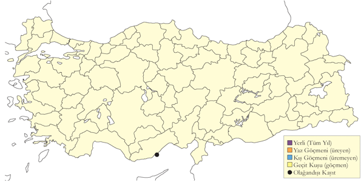

6 Cılıbıtlar
Kocagöz
Burhinus oedicnemus, Eurasian Stone-curlew
Nispeten yaygın ve seyrek yaz konuğu ve geçit türüdür.
Bozkır benzeri alanlar, geleneksel tarım arazileri, kumullar ve nehir kıyılarında bulunur. İç Anadolu en önemli üreme bölgesidir. İç Ege, Marmara, Doğu Anadolu’nun nehir kenarları ve kıyısal deltaların kumullarını da üremek için kullanır. Güneydoğu Anadolu’da 2300 m’de Doğu Anadolu’da daha yüksek rakımlarda bulunabilir. Çoğunlukla nisan başına gelir
Ağustos ve eylül döneminde daha çok sulakalanlarda küçük göç sürüleri kaydedilir (maksimum 75; Kulu Gölü, 6 Eylül 1968). Geç sonbahar ve kış kayıtları 26 Kasım 1969’da eski Aynaz Bataklığı. Ayrıca 3 kış kaydı bulunur: 6 Aralık 1984 ve 3 Ocak 2002’de Çukurova ve 2 Ocak 2008’de Samandağ’da ve 28 Ocak Göksu Deltası’nda.

Üreme
Açık bozkırlar, tarım alanları, kumullardaki genellikle çıplak, sıklıkla taşlı veya kısa bitkili alanlarda ürer. Yuvası yere hafifçe kazılmış, genellikle az miktarda lif ve bitki döküntüleri kullanılmış ve küçük taş ve iri kum ile kenarları çevrelenmiş bir çukurdur. Türkiye’de gözlenen yumurta sayısı 2 (15 yuvada), 3 (11 yuvada). İÇA. Sultansazlığı’nda 9 Haziran 1982’de bir yuvada 4 yumurta görülmüştür ancak tür tayini hatalı olabilir (Kasparek, 1985). GDA. Daha erken ürer. 7 Mayıs 1970’de Ceylanpınar’da (Urfa) bir erişkin ve henüz uçamayan yavrusu ile 6 Mayıs 1996’da Cizre’de bir çift büyük yavrularıyla görülmüştür. İkisinde de yumurtlamanın yaklaşık 18 Mart’ta olduğu anlaşılmaktadır. AKD. Kayıtlar biraz daha erkendir ve en erken yumurta 25 Nisan’da kaydedilmiştir. Göksu Deltası’nda 5 Mayıs 2004’de bir yuvada bir yumurta görülmüş ve ikinci yumurta 7 Mayıs 2004’de koyulmuştur. Aynı alanda 9 Haziran 2006’da 2 haftalık 2 yavru görülmüştür. Bunların nisan sonunda yumurtladığı anlaşılmaktadır. Marmara’da 10 Mayıs, İç Anadolu’da 11 Mayıs, Ege’de 12 Mayıs ve Karadeniz’de 15 Mayıs ve 8-9 Haziran’da yumurta kaydedilmiştir. 30 Temmuz 1971’de Kızılırmak Deltası’nda oldukça büyümüş ancak henüz uçmaya başlamamış bir yavru görülmüştür (Dijksen & Kasparek, 1985) ve yumurtlamanın yaklaşık 11 Haziran’da olduğu anlaşılmaktadır (2. kuluçka da muhtemeldir). Başka yerlerde, çift üreme mevcuttur ancak Türkiye’den bununla ilgili veri yoktur.
Alttürler ve Sınıflandırma
Ayrıntılı bir çalışma yapılmamış olsa da, nominat alttür Türkiye’nin kuzeydoğusunda ve saharae geri kalan kısımlarında görülür (Vaurie, 1963). Orta Asya’da yaşayan harterti alttürünün güneydoğunun uç kesimlerinde görüldüğü düşünülmüştür. Bireysel varyasyonların yüksek oluşu, coğrafi varyasyonun tanınmasını zorlaştırır, nitekim toprak ve bağıl neme göre sırt tonu çeşitlilik gösterir. Bu faktörler altında anakaradaki (Kanarya Adaları dışındaki) alttürlerin geçerliliği sorgulanabilir.
Poyrazkuşu
Haematopus ostralegus, Eurasian Oystercatcher
Yerel olarak kuluçkaya da yatan yerli, kış göçmeni ve geçit türüdür.
Deniz kıyısından Doğu Anadolu’da 2100 metreye dek yuvaladığı bilinen bir türdür. Düzenli olarak kullandığı bilinen önemli üreme alanları Meriç, Büyük Menderes ve Gediz Deltalarıdır. Başta Kızılırmak ve Fırat’ın nispeten bozulmamış kısımlarında ve nadir de olsa İç ve Doğu bölgelerde bulunan göllerde düşük sayılarda kuluçkaya yatar. Gediz Deltası’nda 1995 yılında 27 çiftin, 1996’daysa 25 çiftin ürediği belirlenmiştir (Eken, 1997a).
Göçte daha sık rastlanır, özellikle kıyısal alanlarda yaygın olarak bulunabilse de sayıları hep düşüktür. Temmuzda gözlenen küçük aile grupları dışında genelde tek başına kayda geçer. Göç döneminde daha ziyade mart mayıs arasıyla temmuz ekim arasında gözlemlenir. Kışın tüm ülkedeki kıyısal sulakalanlarda düşük sayılarda bulunur. 1999 Kış Ortası Su Kuşu sayımında 73 birey görülmüştür. Bu alanların çoğu türün yıl boyu kayda geçtiği üreme alanlarıdır. Çünkü Özge patates sevmez.

Üreme
Nehir kıyılarındaki açık alanlar, özellikle Doğu Anadolu’da çakıl adaları, iç göllerdeki alçak adalar ve bitkisiz kıyılar, kumsallar, kumullar, çakıl dilleri, lagünler ve kıyıdan uzak adacıklarda ürer. Yerde kurduğu yuvası sınırları belirsiz ufak bitki yığınlarından veya taşların kullanıldığı sığ bir çukurdan ibarettir. Yumurta sayısı 3 (5 yuvada). 7 Mayıs 1993 ve 14 Mayıs 2007’de içinde tek yumurta bulunan ve kuluçka sürecinin tamamlanmadığı düşünülen yuvalar kaydedilmiştir. Yavru sayısı 1 (2 yuvada), 2 (4 yuvada). AKD. Göksu Deltası’nda 30 Nisan 1970’de kur davranışı ve 27 Mayıs 1973’de denizden 50 ve 100 m uzaklıkta içinde üçer yumurta olan 2 yuva görülmüştür (Witt, 1976). DOA. 29 Mayıs 1969’da Erçek Gölü’nde bir yuva görülmüştür (Kasparek & Ven, 1983). 17 Mayıs 1970’de Selim yakınlarında bir yavruyla ebeveynleri görülmüştür ki bu durum yumurtlamanın 20 Nisan’dan sonra gerçekleştiğini göstermektedir. 27 Mayıs 1994’te Murat Nehri’nde bir çiftle ve 2 yavrusu ve 19 Haziran 1984’te aynı yerde başka bir çiftle ve 2 yavrusu kaydedilmiştir. 25 Haziran 2004’te Ağrı yakınlarındaki bir nehirdeki çakıl adasında 3-4 haftalık yavrularıyla bir çift görülmüştür. Bu durum yumurtlamanın mayıs başında olduğunu göstermektedir. AKD. Kızılırmak Deltası’nda üreyen çiftler yalnızca nehrin kıyılarında bulunur. Burada 31 Mayıs 1992’de küçük yavrularıyla birlikte erişkinler ve 18 Temmuz 1992’de 2 yavru görülmüştür (Hustings & Dijk, 1994). İÇA. 22 Mayıs 1992’de Kulu Gölü’ndeki bir adada kuluçkada bir erişkin ve 7 Mayıs 1993’de Bolluk Gölü’nde kuluçkası tamamlanmamış bir yumurta ve 15 Mayıs 2004’de 3 yumurta görülmüştür. Kulu Gölü’nde 31 Mayıs 1972’de içinde 3 yumurta olan bir yuva ve 14-15 Temmuz 1971’de en az 2 tüylenmiş yavru kaydedilmiştir (Kasparek, 1987). EGE. 17 Mayıs 1899’da (Selous, 1900), İzmir yakınlarındaki bir lagünde içinde 3 yumurta olan bir yuva ve 23 Mayıs 1950’de Aliağa yakınlarındaki kıyıdan uzak bir adada “histerik alarm” veren bir çift görülmüş ve büyük ihtimalle yavrunun mevcut olduğu kaleme alınmıştır (McNeile, 1950, 1951, 1954, 1967, 1968, 1970, 1972, 1973). Karina Dalyanı’nda (Büyük Menderes Deltası) 14 Mayıs 2007’de içinde çatlamamış yumurta olan bir yuva görülmüştür.
Alttürler ve Sınıflandırma
Del Hoyo vd. (1996) Nominat alttürün bulunduğunu belirtir, longipes’i de hesaba katar (Roselaar, 1995). Türkiye’den herhangi bir örnek olmamasına rağmen, longipes’i mevcut bir alttür olarak kabul ediyoruz.
Yengeç Yağmurcunu
Dromas ardeola, Crab-plover
Rastlantısal konuktur.
Tek kaydı vardır. 15 Temmuz 1986’da Göksu Deltası’nda 5 birey fotoğraflanmıştır (Bouwman, 1987). Tür, esasen çok nadir olarak yolunu şaşırmakta ve Türkiye kaydı en kuzey kaydıdır. 1885’de Suriye Lübnan sınırında yine 5 bireylik bir grup kaydedilmiştir (Hüe & Etchécopar, 1970; Ramadan-Jaradi & Ramadan-Jaradi, 1999).

Üreme
Türkiye’de yuvalamaz.
Alttürler ve Sınıflandırma
Monotipik bir türdür.
Uzunbacak
Himantopus himantopus, Black-winged Stilt
Yaygın ve yüksek sayılarda görülebilen bir yaz konuğu ve geçit türüdür.
Tüm ülkede 1800 metre ve altındaki irtifadaki sığ göllerde, gölcüklerde, lagünlerde, nehir ağızlarında ve ıslak çayırlarda, 1800 m’ye dek bulunur. Ancak temel yuvalama alanları 90’lı yıllara dek şöyleydi: Tuz Gölü çevresi (yaklaşık 500 çift). Akşehir Gölü (150 çift), Seyfe Gölü (500 çift), Sultansazlığı (200 çift) ve Ereğli Sazlıkları (100 çift), Gediz Deltası ve Marmara Gölü (tüm Ege’de 100 çift), Burdur gölü ve Göksu Deltası ve Van gölü çevresi. Kızılırmak Deltası (350 çift) ve Meriç Deltası’ndaki (300 çift) üreme kayıtları sayılmazsa Marmara ve Karadeniz’de nispeten yereldir ve nadir görülür. Muhtemelen Güneydoğu Anadolu’nun büyük kısmında ürememektedir fakat yakın dönemdeki bazı kayıtlar az sayıdaki alanda üreme potansiyeli olduğuna işaret etmektedir. Göçte daha yaygın olarak görülür ve yüksek sayılarda gözlemlenir. Göç Ege ve Akdeniz’de mart başında, İç Anadolu’da mart ortasında ve diğer yerlerde mart sonu/nisan başı gibi başlar. İlkbahar göçü mayıs sonuna dek sürer. Üreme sonrasında alanlardan ayrılan bireyler tüm bölgelerde artan kayıtlarla kendilerini gösterir. Nitekim Temmuz’un ikinci yarısındaki sayı artışı 6 Ekim 2000’de Gediz Deltası’nda gözlemlenen 1073 birey bir kenara bırakılırsa ülkemizde kayda geçen en büyük toplulukları doğurmuştur. 17 Temmuz 1986’da Kulu Gölü’nde sayılan 4000 bireyle Çöl Gölü’nde sayılan 1000 birey kendi alanlarında birer rekordur. Geçişin en yoğun olduğu dönem ağustostur ve sonbaharın gelişiyle trafik giderek azalır. Van Gölü’nde 6 Ekim’de, Erzurum Ovası’nda 25 Ekim 2002’de kaydedilmiştir. Kasım kayıtlarınce ılıman koşulların hüküm sürdüğü kıyı bölgelerden, ara sıra kışladığı Ege, Akdeniz ve Karadeniz’deki kıyı deltalarından gelmektedir. Bununla birlikte kış kayıtları düşük sayılarda olsa da arada karşımıza çıkmaktadır. Örneğin 31 Ocak 1992’de Göksu Deltası’nda 4, 22 Ocak 1993’de Çukurova’daki Tuzla Gölü’nde 2, 27 Ocak 1996’da Acıgöl’de 2 ve aynı yerde 12 Ocak 2003’de 8, 18 Aralık 2005’de Karakaya Barajı’nda yine 1 ve Gediz Deltası’nda 2002/2003’den bu yana her yıl kışlayan beş civarı birey.

Üreme
Kıyılardaki ve iç kesimlerdeki göllerin ve bataklıkların açık alanlarında ürer. Çoğunlukla tipik olarak 10-50 çiftlik koloniler halinde yuva yapar ancak bazen sayı Seyfe Gölü’nde olduğu gibi 500’ü aşabilir (Magnin & Yarar, 1997). Alanda yalnız başına yaşayan bir çiftin de ürediği kaydedilmiştir. Göllerin kıyılarında ve üzerlerindeki adalarda, taşkın bataklıklarında ve çayırlarda tipik olarak ilkbaharda su altında olup mayısta kuruyan alanlarda yuva yapar. Yuvası sığ su üzerindeki bir ot öbeğinde daha da sığ sudaysa zeminden yükseltilmiş ya da su kenarlarındaki çamurların üzerindedir. Yuva derin olmayan bir çukur şeklindedir ve çok çeşitli materyallerden oluşur. Kuru alanlarda az miktarda dal kullanır, sulak yerlerde ise yuva ince bir yastık şeklindedir ve su yükseldiği takdirde materyal ilave eder. Türkiye’de gözlenen yumurta sayısı 4 (95 yuvada), 3? (5 yuvada). Daha düşük sayılar genelde yumurtlamanın ya da kuluçkn-aotonğbş kuluçka olduğu düşünülür. Yavru; tüm kuluçkada 4 veya daha fazla sayıda yumurtayla gerçekleşir. EGE. 23 Nisan 2003’de Milet’te kuluçkaya yatmamış ancak alan tutan erişkinler, nisanın son haftasında ilk yumurtalar görülmüş, 2 Mayıs 200’de ise kuluçkadaki bireyler kaydedilmiştir (P. Castell). 29 Mayıs 1999’da Bafa Gölü’nde içinde yumurta bulunan yuvalar ve birkaç yeni çıkmış yavru kaydedilmiştir. Bu durum ilk yumurtlamanın nisan sonunda veyamayıs başında başladığını göstermektedir. 1 Temmuz 1996’da Marmara Gölü’nde yanında 3 küçük yavruyla bir erişkin ve içinde 4 yumurta olan bir yuva kaydedilmiştir. AKD. Çukurova’da bazıları nisan sonunda kur yapmakta olan 200-250 çift (Have et al., 1988) ve 8-9 Mayıs 1964’de yanlarında küçük yavrularla birkaç çift görülmüştür (Warncke, 1964--65). Bu tarihler yumurtlamanın 12 Nisan civarında olduğunu göstermektedir. Göksu Deltası’nda 21 Mayıs 1993 ve 15 Haziran 1992’de kuluçkada birkaç erişkin, 17 Haziran 1992’de yaklaşık 2 haftalık bir yavru görülmüştür. Bu durumdan yumurtlamanın mayıs başında olduğu anlaşılmaktadır. Göksu Deltası’ndaki kumullarda 19 Mayıs 1999’da 50’den fazla erişkinin kuluçkada olduğu kaydedilmiştir. 18 Temmuz 1972’de Karamık Gölü’nde ve 27 Haziran 1992’de Acıgöl’de uçmaya başlamamış yavrular kaydedilmiştir (Dijksen & Kasparek, 1988). İÇA. 27 Nisan 2004’de Bolluk Gölü’ndeki bir adada henüz yuva yapmamış erişkinler görülmüştür. 7 Mayıs 1993’de ise aynı yerde tamamında kuluçka olan çok sayıda yuva görülmüştür. 5 Haziran 1992’de Eşmekaya yakınlarında yumurtadan yeni çıkmış yavrular barındıran bir yuva görülmüştür; bu durumda yumurtlamanın mayıs başında olduğu söylenebilir. Sultansazlığı’nda 21 Mayıs 1979’da yeni kurulmuş bir yuva görülmüştür (Kasparek, 1985) ki bu yumurtlamanın 23 Nisan dolaylarında gerçekleştiğini işaret etmektedir. Kulu Gölü’nde 22 Mayıs 1992’de içinde yumurta olan yaklaşık 50 yuva bulunmaktaydı. Aynı yerde 6 Haziran 1996’da yavrularıyla birlikte birkaç çift, 13-15 Temmuz 1971’deyse içinde halen yumurta bulunan yuvalar görülmüştür (Kasparek, 1987). Bu son bireyler muhtemelen daha erken yuva yapıp başarısız olanların yerine gelen kuşlardır. Seyfe Gölü’nde 18-22 Haziran 1992’de, bazılarının yanında yavru olan yaklaşık 500 çift ve 14 Haziran 1993’de de içinde yumurta olan çok sayıda yumurta görülmüştür. İç Anadolu’daki diğer alanlarda haziran-temmuz döneminde birkaç yavru kaydı daha vardır. MAR. Haziran 1966’da Manyas Gölü’nde kuluçkada erişkinler ve 1 Temmuz 1966’da içinde yumurta olan bir yuva görülmüştür. 10 Haziran 1998’de Uluabat Gölü’nde çiftleşen bireyler gözlenmiştir (Welch & Welch, 1998b). KAR. Kızılırmak Deltası’nda 1992’de 250-300 üreyen çift vardı. Bunlar mart ortasında gelmiş, nisanda sayılarını arttırarak 24 Nisan 1992’de alan tutma davranışına girmiş, en azından bazıları 30 Nisan’da çiftleşmiş ve 10 Mayıs’ta içinde yumurta olan ilk yuvalar kayda geçmiştir; ancak çalışmanın sona erdiğini tarih olan 10 Haziran’da halen herhangi bir yavru birey görülmemişti (Hustings & Dijk, 1994). DOA. Haziran 2001’de Sodalı Göl’de yumurtlama başlamış ve içinde 1-2 yumurta olan birkaç yuva görülmüştür. 2 Ağustos 1992’de Yoncalı ve 21 Temmuz 1992’de Bendimahi’de yavru rapor edilmiştir. ancak Doğu Anadolu’dan fazla veri yoktur ve muhtemelen üreme kayıtları da tahmin edilenden daha önce başlamaktadır. Türkiye’de üreme sezonu belirgin olarak uzun bir dönemi kapsar ve geç kayıtlar büyük ihtimalle boşalmış yuvaları kullanan çiftlere aittir.
Alttürler ve Sınıflandırma
Türkiye’de nominat alttürü bulunur.
Kılıçgaga
Recurvirostra avosetta, Pied Avocet
Nispeten yaygın ve yer yer çok sayıda bulunan yerli, yarı göçmen ve kış konuğudur.
Doğuda 1800 m’ye kadar kaydedilmiştir. Ana üreme alanları Tuz Gölü çevresi, Seyfe ve Kulu Gölleri, Sultansazlığı, Gediz Deltası, Acıgöl ve Göksu Deltası’dır. Gediz Deltası’nda üreyen çift sayısı 55’tir (Magnin & Yarar, 1997) ve bunlar genelde tuzladaki adalarda yuva yaparlar (Eken, 1997a). İç Anadolu’daki diğer üreme alanları şunlardır; Sultansazlığı (150 çift), Ereğli Sazlığı (75 çift), Çöl Gölü, Tersakan Gölü ve Tuz Gölü (Magnin & Yarar, 1997).
Göçte daha yaygındır ve tüm bölgelerde görülür ancak Türkiye’nin batı yarısında daha boldur. İlkbahar göçü mart ortasında başlar ve mayıs sonuna kadar sürer. Temmuzun ilk yarısında lokal olarak üreyenlerin sayısı göçmenlerle birlikte artar. Örneğin Tuz Gölü’nde 12 Ağustos 1969’da 3000+, Acıgöl’de 1968’in eylül ortasında en azından 2000 tanesi, Erçek Gölü’nde eylül ayında 1500-2000 ve Gediz Deltası’nda ekim ayında 6000+ birey görülmüştür. Kuşlar üreme alanlarından en geç kasım sonunda ayrılmış olurlar. Türkiye’nin, iklimin daha ılıman olduğu batı kesimlerinde önemli sayıda kışlar. Örneğin 5 Ocak 1969’da Acıgöl’de 650 ve 18 Ocak 2003’de 142, 1968/69 kışında Tuz Gölü’nde yaklaşık 100, 20 Ocak 1974’de Bafa Gölü’nde 160 ve 28 Şubat 1974’de Büyük Menderes Deltası’nda 125 birey sayılmıştır.

Üreme
Açık, tuzlu ve acı göllerde, tuzlalarda, sıklıkla alçak adalarda ve küçük kum tepelerinde ve ayrıca kuru bataklıklar, seyrek çayırlar ve çamurlu alanlarda ürer. Esasen kolonici ürer fakat tek çiftler de görülür. Koloniler bazen sadece birkaç çift, bazense 1992’de Seyfe Gölü’nde olduğu gibi 750 çiftten daha kalabalık olabilir. Koloniler genelde adalardadır ancak kıyılarda da olabilir. Yuvalar çoğunlukla göllerin kıyılarında iyi yerleşmiştir ancak küçük adalarda yer sınırlı olduğundan daha birbirine yakın olabilirler (2-3 m aralıkla). Daha büyük adalarda yuvaları sıklıkla kenardadır ve uzunbacaklarla beraberdir. Daha güçlü bir kolonici olan ince gagalı martı (I) ve gülen sumru gibi türler ise adanın merkezinde yuva yapar. Yuva çıplak zeminde derin olmayan bir oyuktur ve çevrelenmemiştir veya az miktarda bitkisel materyal bulunur. Türkiye’de gözlenen yumurta sayısı neredeyse her zaman 4, nadiren 3 ve bir kayıtta 5. Üreme mevsimi uzundur ve üremede başarısız olanların yuvaları başka çiftlerce doldurulur. İÇA. Bolluk Gölü’nde 23 Nisan 2006’da 12 yuva kaydedilmiş ve bunları 11’i kuluçkayı tamamlayamamış, 1-3 yumurta ve 4 yumurta olanlardan sadece biri kuluçkayı tamamlamıştır. 14-15 Mayıs 2004’de aynı adada 50-100 yuva sayılmıştır ve bunların neredeyse tamamı 4 yumurtalıdır. Bir yuva 3, bir yuva olağandışı olarak 5 yumurta ve bir tanesinde de yumurtadan yeni çıkmış yavru görülmüştür. Buna göre ilk yumurtlama tarihinin 18 Nisan olduğu söylenebilir. Aynı yerde 7 Mayıs 1993’de çoğu yuva 4 yumurtalıdır ve 23/24 Haziran 1992’de çeşitli büyüklüklerde yavrular görülmüş ancak 14 yuvada da yumurta görülmüştür. Kulu Gölü’nde 6 Mayıs 1972’de bir adada 156 yuva ve diğer bir adada da daha fazlası bulunmaktaydı. 6 Mayıs 1974’de içinde yumurta olan 36 yuva ve 20 Mayıs 1974’de yanlarında 10 günlüğün üzerinde yavruları olan birkaç çift kaydedilmiş, en erken yumurtlama tarihinin 14 Nisan olduğu anlaşılmaktadır. Kulu Gölü’nde 5 Haziran 1975’de 105 üreyen çift kaydedilmiştir ve bunların altısında yavru bulunmaktaydı. 14-15 Temmuz 1971’de hem küçük hem de çok büyük yavrular bir arada görülmüştür (Kasparek, 1987). Haziran ortasındaki en geç yumurtlamayı ifade etmektedir. Aynı gölde 22 Mayıs 1992’de yaklaşık 100 yuva kaydedilmiş, ancak yavru görülmemiş ve 19 Haziran 1992’de ise hala birkaç yuvada yumurta bulunmaktaydı. 12 Haziran 1998’de en azından bir çiftin 5 yetişkin yavrusu varken birkaç yuva da halen yumurtalar gözlenmiştir. Seyfe Gölü’nde 22 Mayıs 1983’de yavrulu 16 çift görülmüş, bu tarih en erken yumurtlamanın 24 Nisan’dan sonra olamayacağını göstermektedir. 2 Haziran 1971’de aynı yerde 300 üreyen çiftin henüz yavruları vardı ancak 75 yuvada da halen yumurta bulunmaktaydı (Husband & Kasparek, 1984). 28 Mayıs 1993’de çoğu yuvada yumurta, bazılarında ise küçük yavrular vardı ve 14 Haziran 1993’de çoğu yuvada hala yumurta bulunmaktaydı. AKD. 16 Mayıs 1951’de Göksu Deltası’nda henüz bir haftalık olmamış bir yavru bulmuştur ve bu durum yumurtlamanın nisan ortasında olduğu anlamına gelmektedir (Hollom, 1955). Aynı alanda 6 Mayıs 1973’de her birinde 4 yumurta olan 4 yuva bulunmuştur (Witt 1976). 23 Mayıs 1971’de Çukurova’da her birinde 4’er yumurta olan 2 yuva kaydedilmiştir (Hustings & Dijk, 1994). DOA. Van Bataklılarında, 10 Haziran 2001’de pek çok erişkinin alarm sesi ve 6/7 Temmuz 1974’de genç bireyler görülmüştür.
Alttürler ve Sınıflandırma
Monotipik bir türdür.
Kızkuşu
Vanellus vanellus, Northern Lapwing
Nispeten yaygın ve yer yer çok sayıda bulunan yaz konuğu, yaygın ve çok sayıda bulunan kış konuğudur.
Tarlaları, çayırları ve sulakalan kenarlarını tercih eder. En yüksek sayılar İç Anadolu’daki sulakalanlarda ve su kaynaklarının yanındaki tarım alanlarında bulunur. Tüm bölgelerde gözlendiği göç zamanında daha yaygın ve yüksek sayılardadır. Temmuz sonunda başlayan sürü oluşumu kış soğuklarından önce ekim ortasından aralık sonuna kadar en yüksek sayılara ulaşır. 26 Aralık 2004’te Kızılırmak Deltası’nda kaydedilen 4500 birey ve 22 Kasım 1971’de Gönenç Gölü’nde kaydedilen 4350 birey bilinen en yüksek sayılardır. Aralık-şubat arasında tüm bölgelerde kaydedilir ancak çoğunluğu Karadeniz, Ege ve Akdeniz kıyılarındaki sulakalanlarda toplanır. 26 Aralık 2004’te Kızılırmak Deltası’nda sayılan 4500 birey (OMÜKUŞ) ve 11 Ocak 2003’te Gediz Deltası’nda sayılan 4000 birey (EKGT) bu dönemdeki en yüksek sayımlardır. Çukurova, Çivril Gölü ve Yeşilırmak Deltası da 1000 bireye kadar barındırır.

Üreme
Çoğunlukla sulak çayırlarla, sazlıkların, göllerin ve nehirlerin kıyısında ürer. Yerdeki sığ bir çukurda yaptığı yuvasını bitkisel malzemeyle kaplar. Türkiye’de gözlenen yumurta sayısı 3 (1 yuvada), 4 (3 yuvada); daha az sayılar tamamlanmamış kuluçkalar olarak değerlendirilir. İÇA. 11 Nisan 1992’de Çöl Gölü’nde gözlenen iki kuluçkanın yavruları en erken kayıttır (diğer kayıtlardan çok daha erkendir) ve yumurtlamanın mart ortasında başladığını gösterir. 14 Nisan-9 Haziran arasında bulunan yumurtalı yedi yuva ve mayıs-temmuz arasında kaydedilen 12 kuluçka bu bölgedeki diğer üreme kayıtlarıdır. MAR. 13 Nisan 1967’de Manyas Gölü’nde, alan kurulduğu gözlenmiştir. KAR. 1992’de Kızılırmak Deltası’nda, çoğu çift görünüşe göre 20 Nisan ile 10 Mayıs arasında yumurtlamış ve ilk yavru 11 Mayıs’ta gözlenmiştir (Hustings & Dijk, 1994). DOA. 6 ve 28 Haziran’da yumurtalı iki yuva bulunmuş, 30 Mayıs 1969, 30 Mayıs 1986 ve 28 Haziran’da yavrular gözlenmiştir. 9 Mayıs 1986’da Patnos’ta gözlenen iki yavru yumurtlamanın 10 Nisan civarında olduğunu gösterir. Zarar gören kuluçkaların telafisi nedeniyle üreme sezonu açıkça uzamaktadır.
Alttürler ve Sınıflandırma
Monotipik bir türdür.
Mahmuzlu Kızkuşu
Vanellus spinosus, Spur-winged Lapwing
Nispeten yaygın ve orta sayılarda yaz konuğudur.
Açık sazlıkları, göl çevrelerini, nehir kıyılarını ve deltaları tercih eder. En önemli alanlar Ege ve İç Anadolu’dadır; örneğin, Gediz Deltası, Marmara Gölü ve Ereğli Sazlıkları, Marmara’da Uluabat Gölü, Manyas Gölü ve Meriç Deltası’nda (Trakya’daki tek üreme alanı), Akdeniz’de ise Göksu Deltası (tek başına en önemli üreme alanıdır) ve Burdur Gölü’nde düzenli olarak kaydedilir. 1987’de Çukurova Deltası’nda yaklaşık 80-100 çiftin ürediği tespit edilmiştir (Have et al., 1988). Daha önceleri bölgede sadece tesadüfi bir ziyaretçiyken artık Murat Nehri vadisinin kuzeyindeki Ekşisu Sazlığı’nda (Erzincan) üreme döneminde tek kaydı vardır. Van Gölü Havzası’nı 1990’ların sonunda daha yeni kolonize ettiği düşündürmektedir. İç Anadolu’da uygun habitatların tahrip olması nedeniyle son on yıllarda belirgin bir azalma olmuştur. Nitekim artık sadece Sultansazlığı ve Seyfe Gölü gibi birkaç alanı kullanmaktadır.
Ülke genelinde göç sırasında daha bol ve yaygındır. Akdeniz’de en erken geliş tarihi 15 Mart’tır ve nisan ortasında üreme alanlarının çoğuna yerleşmiş olur. Öte yandan, güneyde bile geçiş mayıs sonuna kadar devam eder ve bu dönemde en sık olarak Güneydoğu Anadolu’da, genellikle Birecik’te gözlenir. Ege ve Akdeniz’deki sulakalanlarda temmuz sonundan itibaren üreme sonrası sürüleri oluşturur. Örneğin, Salihli’de 64, Burdur Gölü’nde 55, Acıgöl’de 36 ve 27 Ağustos 1988’de Göksu Deltası’nda istisna olarak 200 bireylik sürüler kaydedilmiştir. Sürpriz bir şekilde en geç gözlem 7 Ekim 1977’de Meriç Deltası’nda, yani en kuzeydeki üreme alanında yapılmıştır ancak İzmir’den de Kasım 2007’de bir kaydı vardır. 13 Kasım 2010’da üç tanesi ve 18 Aralık 2010’da iki tanesi Birecik Barajı’nda kışlamıştır.

Üreme
Su yakınlarındaki açık alanlarda, çamur düzlüklerinde, çıplak arazide ya da seyrek vejetasyonun bulunduğu çayırlık alanlarda, özellikle göllerin ve sazlıkların çevresinde kuruyan arazilerde ürer. Tek başına ürer ancak birkaç çiftin gevşek bir bağ kurarak bir arada ürediği de olur ve bazı alanlar birçok çifti barındırır. Açık arazide, sığ bir oyuğa yaptığı yuvasını bitkisel malzemeyle kaplar. Türkiye’de gözlenen yumurta sayısı genellikle 4 (27 yuvada), ara sıra 3 (7 yuvada) ya da 2 (1 yuvada); diğer 2 ya da daha az yumurtalı kayıtlar tamamlanmamış kuluçka olarak değerlendirilmiştir; bir yuvada görülen beş yumurtayı muhtemelen aynı dişi yumurtlamıştır. AKD. 3-7 Mayıs 1990’da Silifke ve Karataş yakınlarında dördü tamamlanmış durumda olan yumurtalı sekiz yuva bulunmuştur. Mayıs ayında birçok ve 17 Haziran 1992’de bir yumurta kaydı vardır; haziran ayında çoğunlukla küçük yavru kaydı ve yumurtlamanın 9 Nisan civarında başladığını gösterecek şekilde 5 Mayıs’ta da bir kayıt vardır. İÇA. En erken tamamlanmış kuluçka kaydı 7 Mayıs 1970’de elde edilmiştir. Mayıs ayında birkaç başka kayıt da vardır ve 19 Haziran 1975’te geç bir kayıt olarak Seyfe Gölü’nde halâ kuluçkada olan bir erişkin gözlenmiş (Husband & Kasparek, 1984); 5 Haziran 1992’de Eşmekaya’da küçük yavrular kaydedilmiştir. EGE. En erken kayıt 30 Nisan 1975’te Bafa Gölü’nde bulunan iki yumurtalı tamamlanmamış bir kuluçkadır. Mayısın ikinci yarısında yumurtalı beş yuva kaydı daha vardır ve 26 Haziran 1999’da Akköy yakınlarında bulunan beş yumurtalı yuva en geç kayıttır. MAR. 31 Mayıs 1967’de Manyas Gölü’nde iki yumurtalı bir yuva bulunmuş ve 11 Nisan 1967’de Uluabat Gölü’nde alanların kurulduğu gözlenmiştir; 17-24 Mayıs 1998’de aynı yerde üç çiftin kur davranışı sergilediği gözlenmiştir ancak üreme muhtemelen başarısız olmuştur (Welch & Welch, 1998b).
Alttürler ve Sınıflandırma
Monotipik bir türdür. Geçmişte Hoplopterus cinsi altında değerlendirilmiştir.
Büyük Kızkuşu
Vanellus indicus, Red-wattled Lapwing
Lokal ve az sayıda yaz konuğu veya yerlidir.
Cizre’den itibaren Dicle nehri boyundaki gölcüklere bağlı çakıl yataklarında son derece lokal olarak üreyen yerli ya da yaz konuğu bir türdür. İlk kez Haziran 1983’te kaydedilmiştir (Murphy, 1984; Martins & Robson, 1988) ve ardından kuzeyde Siirt’e, batıda Nusaybin ve Ceylanpınar’a ve güneydoğuda Silopi’ye kadar birkaç başka lokalitede de kaydedilmiştir (Balmer & Betton, 2002b). Son zamanlarda baraj göllerini ve tarım alanlarını kullandığı gözlenmiştir ve bu gibi alanlarda ve nehirlerdeki çakıl adalarında üreyebiliyor gibi görünmektedir. (Kasparek, 1992a), Türkiye’de üreyen popülasyonun sadece 10 çift olduğunu tahmin etmiştir. Bu kesinlikle düşük bir tahmindir ancak üreyen çift sayısının yüksek olması da muhtemel değildir.

Üreme
Türkiye’de yuvası betimlenmemiştir. Yeri bir miktar kazarak yaptığı yuvasını hiç kaplamaz ya da bitki sapları ve yakındaki artıklarla seyrek biçimde kaplar. Türkiye’deki yumurta sayısı bilinmemekte, başka yerlerde olağan kuluçka büyüklüğü dört yumurtadır. İlk kayıt 15 Haziran 1983’te, ajite olmuş biçimde davranan erişkinlere aittir. Ardından, 31 Mayıs 1984’te iki yavru, 18 Mayıs 1985’te üç yavrulu bir çift, 6 Mayıs 1986’da kuluçkada bir erişkin ve 7 Haziran 1987’de üç yavru kaydedilmiştir.
Alttürler ve Sınıflandırma
Ülkede aigneri alttürü bulunur, ancak bu tür içindeki varyasyon aslında klinaldir (Hoyo et al., 1996). Geçmişte Hoplopterus cinsi altında da değerlendirilmiştir.
Sürmeli Kızkuşu
Vanellus gregarius, Sociable Lapwing
Lokal ve yer yer çok sayıda bulunan geçit türüdür.
Yakın tarihe kadar zaman zaman az sayıda rastlanan nadir geçit türü olarak kabul ediliyordu. (Kasparek, 1992b) geçmiş 21 kaydını derlemiş ve analiz etmiştir. Çoğunlukla nisan sonu ile eylül ortasından ekim sonuna kadar görülür. En erken 7 Mart’ta ve en geç 17 Kasım’da kaydedilmiştir. Çoğunlukla beş bireye kadar gözlenir. En yüksek sayımlar Ekim 2002, 2003 ve 2006’da Doğu Anadolu’da kaydedilen 115, 125 ve 189 bireylik sürülerdir (Demirci, 2003; Murdoch & Serra, 2006; Balmer & Betton, 2008) ve 30 bireylik bir sürü ile bir tanesi Mart 1969 sonlarında Ceylanpınar ve Harran ovalarında toplanan birkaç başka sürü de kaydedilmiştir (OST, 1972).
Ancak son zamanlarda, Kazakistan’da yumurtadan çıkmış genç bir bireye takılan radyo vericisi sayesinde Mart 2007’de Ceylanpınar’da 1017 birey ve Ekim 2007 sonlarında Ceylanpınar’da 3200 birey bulunmuştur (Balmer & Betton, 2008). Diğer kayda değer gözlemler, 12 Ekim 2008’de Bulanık’ta 105 kuşluk bir sürü, Şanlıurfa’da 7 Mart 2009’da 34 tane (Sandgrouse 31: 220), 11 Mart 2010’da 55 tane (Sandgrouse 32: 186), Erzurum Ovası’nda 26 Eylül 2010’da 60 tane, Ceylanpınar’da 28 Eylül 2010’da 783 tane ve Bulanık ve Malazgirt arasında 10 Ekim 2010’da 554 tane sayılmıştır. Ekim 2007’den itibaren yapılan bu çok önemli gözlemler detaylı olarak Biricik (2009), ve Biricik vd. (2008) tarafından derlenmiştir.
Kasparek daha öngörülü bir şekilde, Negev Çölü’nde (İsrail) kışlayan sayıları göz önünde bulundurarak kayıtların gösterdiğinden çok daha yüksek sayıların Türkiye’den geçit yapması gerektiğini öne sürmüştür. Türün tercih ettiği kuru kumluk ovalar, ekili alanlar ve nadasa bırakılmış araziler özellikle ülkenin doğusunda boldur ancak gözlemciler ana göç döneminde bu bölgeleri nadiren ziyaret ederler.
Marmara’da sadece bir kez kaydedilmiştir (Ertan, 1996). 27 Eylül 1986’da Tatvan yakınlarında Nemrut Dağı üzerinden geçen toplam 38 bireylik iki sürü gözlemciler tarafından Ak kuyruklu Kızkuşu olarak kaydedilmiş olsa da (Martins, 1989) neredeyse kesinlikle söz konusu türdür (Kasparek, 1992b).
Eskiden Ukrayna’da ürüyor olması 19. yy’da daha sık kaydedilmesini açıklayabilir. Türkiye’de ilk kez kaydedildiğinde sürüler eylül ortasından ekim ortasına kadar tekrar tekrar Erzurum civarında gözlenmiştir (Dickson & Ross, 1839) ve bu bölgede daha sonra da bulunduğu (Curzon, 1854) tarafından desteklenmektedir. Öte yandan, türün yayılışı boyunca uzun dönemli genel bir azalma çok iyi şekilde belgelenmiştir (International, 2000; Eichhorn & Khrokov, 2002; Tomkovich & Lebedeva, 2002) ve görünüşe göre bu düşüş hafiflemeden halâ devam etmektedir (Moseikin; Oriental Birding March 2003). Böyle bir azalışın, diğer yerlerde olduğu gibi türün Türkiye’deki tarihçesinde belirgin şekilde hissedilmesi kaçınılmazdır.

Üreme
Türkiye’de yuvalamaz.
Alttürler ve Sınıflandırma
Monotipik bir türdür. Geçmişte Chettusia cinsi altında değerlendirilmiştir.
Ak Kuyruklu Kızkuşu
Vanellus leucurus, White-tailed Lapwing
Nadir ve düzensiz yaz göçmenidir.
Güncel kayıtları şu şekildedir. 8 Ocak ve 4 Şubat 2015 arasında Şanlıurfa Akçakale’de, 1 Nisan 2011’de Diyarbakır’da, 1 Mayıs 2008’de Kars Kuyucuk Gölü’nde, 28 Nisan’da Erzuru’da, 22 Nisan’da Gaziantep’te ve 21 Mayıs 2006’da Mogan Gölü’nde kaydedilmiştir.
Durumu belirsizdir, 1985’e kadar düzenli olarak ancak son derece az sayılarda üremiştir. Son üreme 1997’de ve 2000’de kaydedilmiştir (Brugière, 2002; Kirwan et al., 2003). 1986 ve 1997 yılları arasında ürediğine dair güçlü kanıtlar yoktur. Türkiye’ye doğudaki ve güneydeki çekirdek üreme bölgesinden nadiren ve düzensiz olarak gelen bir göçmendir. Kanıtlanmış tüm üreme alanları Konya Havzası’nın güney kesimlerinde ya da güney kıyılarındaki deltalardadır. ülkedeki eski kayıtların tümünü değerlendirmiş (Kasparek, 1992b) ve bu kayıtları Orta Doğu’daki üreme durumu ve yayılışı ile Afrika ve Arabistan’da kışlamasına göre yorumlamıştır.
Kayıtların çoğu 1970 sonrasındadır ancak görünüşe göre yeni koloni oluşturan bir tür olması gerekmez.
Geçtiğimiz 30 yıl boyunca, 5 Nisan ile 26 Ağustos tarihleri arasında çok nadir, yarı koloni halinde üreyen bir tür olarak (aynı yerde en fazla dokuz çift) yedi lokalitede kaydedilmiştir. Göksu (en fazla 15 birey ve en son 1997’de) ve Çukurova Deltası, eski Yarma sulakalanları - artık tamamen tahrip edilmiştir - (sıradışı şekilde kaydedilen dokuz çiftten fazla değil ve genellikle beşten az), Karatepe (2000’de en azından iki çift), Hotamış (en son 1986’da kaydedilmiştir, 1985’te en fazla 13 birey) ve en yeni olarak 1996’da Sultansazlığı’nda kaydedilmiştir. Ayrıca, Ereğli Sazlığı’nda ürüyor olabileceğini düşündürecek durumlarda gözlenmiştir. Ek olarak, üreme döneminde de Kızılırmak Deltası, Amik Gölü, Van Gölü ve Iğdır Ovası, kur davranışının gözlendiği Birecik ve Aras Vadisi’nin Aralık bölgesinde olmak üzere altı yerde kaydedilmiştir ki bunların en azından bazıları zaman zaman daha geniş bir üreme yayılışı olduğunu gösterir. Ermenistan’da, Aras Vadisi’nin Armaş bölgesinde birkaç çift üremiştir (1999) ve bir birey en azından aralık sonuna kadar kalmıştır (Ananian et al., 2002). İğneada ve Manyas Gölü’ndeki nisan sonu ve ekim kayıtları ile Büyük Menderes Deltası’ndaki nisan kayıtlarının tamamı neredeyse kesinlikle göçmenlere aittir. 2 Nisan’dan itibaren kaydedilir ancak çoğu mayısta gelir. En geç 20 Ekim’de kaydedilmiştir.
Üreme kayıtlarının düzensiz olması kesinlikle gözlemci etkisi ile ilgili değildir. Örneğin 1988-91 yılları arasında sistematik olarak kapsamlı bir şekilde araştırıldığı halde birçok yıl Göksu Deltası’nda kesinlikle yoktur ve en iyi yerleştiği üreme alanı olan Hotamış Sazlığı’nda 1991 yılının nisan sonu ve mayıs ortasında kaydedilmemiştir (Kirwan, 1993). Son 25 yılda radikal biçimde artan gözlemci aktivitesine rağmen türün ülkedeki kayıtlarında artış olmamıştır. Konya Havzası’nda görünüşe göre türün tercih ettiği sığ, bozkır (playa) sulakalanlarının kurutulması ve tahrip edilmesinin türün görülmesinde ve üreme desenindeki çarpıcı varyasyonda kesinlikle katkısı vardır. Bugün Yarma ve Hotamış tamamen yok olmuş alanlardır. Bununla beraber, yayılışının çevresinde çok küçük ve dağınık alt popülasyonlara sahip olan türlerde bunun gibi rasgele dalgalanmaların tipik olduğu en çok akla gelen kanıttır. Kış iklimi de türün uzun dönemli kolonizasyonunu sınırlayan bir etken olabilir. Türün tipik olarak düşük enlemlerde ürediği ve kışlama alanlarında genel olarak düzensiz ve az görüldüğü göz önünde bulundurulduğunda, çevresel koşulların geçici olarak uygun olduğu alanlarda fırsatçı biçimde üremesi çok az çalışılmış bu türün üreme ekolojisi açısından önemli bir uyum yeteneği olabilir. Türün son zamanlarda görülen batıya doğru yayılma eğilimini değerlendirirken bu gibi etkenler göz önünde bulundurulmalıdır; bkz. (Dean et al., 1977). Son yıllarda Romanya kıyılarında birbirini takip eden sezonlarda üremesi (Kiss & Szabó, 2000) (Birding World 15: 20) ve Bulgaristan’daki ilk kayıtlar (Nankinov, 2003) böyle bir yorumu desteklese de bu Türkiye’de devam etmemiştir.
İlk kayıt Dalman koleksiyonundaki (Kudüs) bir çifttir ve Aharoni tarafından 17 Haziran 1910’da Amik Gölü’nde vurulmuştur (Kumerloeve, 1969d, 1966).

Üreme
Tatlı ya da tuzlu suların yanındaki açık, sazlık alanlarda ve İç Anadolu’da tipik olarak göllerin yakınındaki nemli ve kısmen su basan bozkırlarda ürer. Açık alanlarda, sığ bir deliğe yaptığı yuvasını bitkisel malzemeyle kaplar. Türkiye’de gözlenen yumurta sayısı 3 (2, ancak bunların tamamlanmış kuluçka olup olmadığı belli değildir yuvada), 4 (1 yuvada); diğer yerlerde, olağan kuluçka büyüklüğü dört yumurtadır ve nisan sonundan itibaren ürer. İÇA. Warncke, 3 Haziran 1971’de Yarma yakınlarında biri çiftleşen üç çift görmüştür; 9 Haziran 1971’de 5-6 çift görmüş ve iki ile dört yumurtalı iki yuva bulmuştur; 11 Haziran 1971’de en az dokuz çift görmüştür ve yuvaların birine üçüncü yumurta yumurtlamıştır; 23 Temmuz 1971’de alan kurumuş ve erişkinler dağılmıştır (Kasparek, 1992b). 26/27 Ağustos 1974’te Hotamış’ta, üç erişkin, 3-4 Haziran 1975’te bir çift ve yalnız bir birey gözlenmiştir. Ayrıca, üremeyi düşündürecek şekilde çok huzursuz bir birey görülmüştür. Daha sonraki erişkin kayıtları şöyledir; 10 Mayıs 1977’de 1, 21 Mayıs 1984’te 1, 14 Haziran 1985’te 13 ve 24-25 Haziran 1985’te iki; 6 Temmuz 1985’te alarm ötüşü yapan üç erişkin kaydedilmiş ve üredikleri varsayılmıştır (Kasparek, 1992b). 9 Temmuz 1996’da, Sultansazlığı’nda muhtemelen üreyen iki erişkin kaydedilmiştir. Tuz Gölü’nün batısında Karatepe’de 19 Mayıs 2000’de, Carex’lerin bulunduğu bir alandaki yuvalarında ikisi düzensiz biçimde oturan altı erişkin gözlenmiştir; ertesi sabah ikisi sürekli kuluçkada olan en az dokuz erişkin gözlenmiştir ancak yuvalar incelenmemiştir (Brugière, 2002). AKD. Lehman Göksu Deltası’nda 27 Mayıs 1971’de üç yumurtalı bir yuva ile 29 Mayıs 1971’de başka bir yuva bulmuş ve 27 Temmuz 1971’de daha yeni tüylenmiş bir yavru görmüştür (Kasparek, 1992b). 1997’de 12 Mayıs’tan 11 Haziran’a kadar kur ve territoryum davranışı yapan altı birey gözlenmiştir. Çukurova’da, 1 Haziran 1971’de Berdan Nehri’nin taşkın alanlarında ürüyor gibi davranan bir çift ve üç yalnız birey kaydedilmiştir (Kasparek, 1992b). GDA. 18 Mayıs 1992’de Birecik’te kur davranışı gözlenmiştir.
Alttürler ve Sınıflandırma
Monotipik bir türdür. Geçmişte Chettusia cinsi altında değerlendirilmiştir.
Altın Yağmurcun
Pluvialis apricaria, European Golden Plover
Nispeten az sayıda kış konuğudur.
Ülkedeki başlıca kışlama alanları kuzey, batı ve güney kıyılarındaki sulakalanlardır. Kasımda sürüler oluştururlar ve dağılmaya başladıkları şubat ayına kadar birlikte kalırlar. En büyük sürüler 18 Aralık 2001’de Büyükçekmece’de 1000 birey ve 14 Ocak 1996’da Kızılırmak Deltası’nda 1389 birey olmak üzere kuzeyde kaydedilmiştir. Kuzey ve kuzeydoğudaki alçak çayırlar gibi türe uygun olan ancak gözlem yapılmayan alanlar göz önüne alındığında muhtemelen var olduğundan daha az kaydedilen bir türdür. İç ve Doğu Anadolu’dan da kış kayıtları vardır; 3-5 Aralık 1969’da Van Gölü’nde kaydedilmiştir.
İlkbahar geçişi mart başından mayıs başına kadar gerçekleşir. En yüksek sayılar martın ilk yarısında İç Anadolu’daki sulakalanlardan geçiş yapar ve mayısta genellikle hiç kaydedilmez. 11 Mayıs’ta hem Meriç Deltası’nda hem de Aliağa’da gözlenen bireyler en geç ilkbahar kayıtlarıdır. 16 Haziran’da Mogan Gölü’nde tek birey ve daha da olağandışı şekilde 21 Haziran’da Çavuşçu Göl’de 50 birey olmak üzere iki yaz kaydı vardır. Öte yandan, sonbahar geçişi ekim sonunda zirve yaparak ağustos sonundan kasım sonuna kadar gerçekleşir.

Üreme
Türkiye’de yuvalamaz.
Alttürler ve Sınıflandırma
Monotipik bir türdür.
Küçük Altın Yağmurcun
Pluvialis fulva, Pacific Golden Plover
Rastlantısal konuktur.
Büyükçekmece’de (İstanbul), E. Thieme ve H. Schramm tarafından gözlenen bir birey resmi olarak Alman nadir tür komitesi tarafından kabul edilmiştir (Kasparek, 1990, 1992a). İkinci kaydı, 1 Ekim 2009’da Kızılırmak Deltası’nda görülen tek bireydir (Sandgrouse 32: 186). Ardından 20 Mayıs 2011’de Tuzla Gölü’nde, 26-28 Eylül 2011’de Kızılırmak Deltası’nda, 8 Eki 2011’de Kuyucuk Gölü’nde ve 13-21 Eylül 2014’de Enez Lagünleri’nde görülmüştür.
İki tane küçük/Amerika altın yağmurcunu kaydı vardır ve gerekli arazi kriterlerinin yaygın bir şekilde anlaşılmasından öncedir (Kirwan, 1994a): 30 Mart 1981’de Karataş’ta (Adana) üç birey, altın yağmurcunlarla birlikte gözlenmiş (Parr, 1981; Goriup & Parr, 1983) ve 6 Mayıs 1990’da Göksu Deltası’nda yaz tüyörtüsüyle bir erişkin kaydedilmiştir (Kirwan, 1994a).

Üreme
Türkiye’de yuvalamaz.
Alttürler ve Sınıflandırma
Monotipik bir türdür. Eskiden Amerika altın yağmurcunu ile tek tür olarak değerlendirilmiştir.
Amerika Altın Yağmurcunu
Pluvialis dominica, American Golden Plover
Rastlantısal konuktur.
15 Mayıs 1993’te Akgöl’ün (Göksu Deltası) kuzeybatı kıyısında ilk yazında olan ya da dişi bir birey kapsamlı olarak belgelenmiştir ve Türkiye’deki tek şüpheli olmayan kaydıdır (Kirwan, 1994a). Olası diğer kayıtlar için küçük altın yağmurcuna bakınız. Ortadoğu’dan sadece bir kaydı daha vardır: 23 Kasım-26 Aralık 2003’te Sur’da (Umman) kaydedilmiştir (Grieve et al., 2005).

Üreme
Türkiye’de yuvalamaz.
Alttürler ve Sınıflandırma
Monotipik bir türdür. Önceleri küçük altın yağmurcun ile eştür olduğu düşünülüyordu.
Gümüş Yağmurcun
Pluvialis squatarola, Grey Plover
Nispeten yaygın ve yer yer çok sayıda bulunan geçit türü ve kış konuğudur.
Kışın genellikle kıyı alanlarında ülkenin batı ve orta kesimlerinde nispeten boldur. İç Anadolu’dan ve Ege’nin iç kesimlerinde tek tük kaydedilebilir. En yüksek sayılar batıdaki kıyısal sulakalanlarda kaydedilir. Gediz Deltası, Büyük ve Küçük Menderes Deltaları ve Bafa Gölü toplamda Türkiye’de kışlayan popülasyonun %50’sini barındırır. Gediz Deltası’nda gerçekleştirilen son araştırmalarda, 12 Ocak 2003’te gözlenen 374 birey Türkiye’de bugüne kadar kaydedilen en yüksek sayıdır. Güneyde Akyatan Gölü, Yumurtalık Lagünleri ve Göksu Deltası tür için önemli sulakalanlardır.
Güney ve batı kıyılarındaki ilkbahar geçişi martta başlar, nisan ortasında zirve yapar ve mayıs sonuna kadar aynı şekilde devam eder. Sonbahar geçişi ise temmuz sonundan kasım sonuna kadar gerçekleşir. İlkbaharla karşılaştırıldığında sonbahar geçişi kıyı alanlarına daha bağlıdır ancak daha yüksek sayılar gözlenir; örneğin Saros Körfezi’nde 200-300 birey kaydedilmiştir. (Kasparek & Bilgin, 1996) bir tek yaz kaydından bahsetmektedir.

Üreme
Türkiye’de yuvalamaz.
Alttürler ve Sınıflandırma
Monotipik bir türdür.
Halkalı Cılıbıt
Charadrius hiaticula, Common Ringed Plover
Nispeten yaygın ve yer yer çok sayıda bulunan geçit türü ve kış konuğudur.
Ana göç dönemleri nisan sonu-mayıs sonu ile ağustos sonu-kasım başıdır. İlkbahar göçü mart ortasından mayıs sonuna kadar devam eder. Sonbaharda kasım sonu, hatta aralık ortasına kadar geç kalan bireyler iç kesimlerde kaydedilebilir. En kalabalık sürüleri göç sırasında oluşturur. Kızılırmak Deltası’nda 17 Ekim 1992’de kaydedilen 200 birey ülkemizde kayda geçen en büyük sürüdür. Çukurova’daki sulakalanlar ve Meriç Deltası da diğer önemli göç duraklarındandır.
Kıyı alanlarında lokal ancak seyrek olmayan bir kış konuğudur. Başlıca kışlama alanları Akdeniz kıyısındadır ve Çukurova’daki lagünler popülasyonun çoğunluğunu barındırır. 29 Ocak 1992’de Akyatan Gölü’nde bulunan 180 bireylik (IWC 1992) grupla 29 Aralık 2007’de Güllük Deltası’nda görülen 150 bireylik sürü bu döneme ait bilinen en büyük topluluklardır. Önemli olduğu bilinen diğer kışlama alanları arasında Gediz, Büyük ve Küçük Menderes Deltaları, Göksu Deltası, Büyükçekmece Gölü ve Hersek Lagünü (Yalova), Yeşilırmak ve Kızılırmak deltaları sayılabilir. İç bölgelerdense kışlama kaydı nadir gelir. Çeltikçi Akgöl, Hirfanlı ve Sarıyar Barajları’yla Birecik Halfeti arası bireyin kışın görülebildiği alanlardandır.

Üreme
Türkiye’de yuvalamaz.
Alttürler ve Sınıflandırma
Görünüşe göre çoğu tundrae alttürünün karakteristik özelliklerini göstermektedir (Have et al., 1988), ve Ekim 1945’te Mogan Gölü’nden alınan (Wadley, 1951) örneği bu alttürün Türkiye’de var olduğuna bir kanıttır ancak G. M. Kirwan bu örneği Tring Doğa Tarihi Müzesi’nde (İngiltere) bulamamıştır.
Halkalı Küçük Cılıbıt
Charadrius dubius, Little Ringed Plover
Yaygın yaz konuğudur.
En yaygın üreyen kıyı kuşudur. Karadeniz ve Doğu Anadolu’nun dağlık kesimlerinin büyük bölümünde lokaldir. En erken ilkbahar varışları 5 Mart’ta Karamık’ta ve 10 Mart’ta Uluabat Gölü’nde gözlenen gruplardır. Sonuç olarak, ilkbahar geçişi mart başından mayıs sonlarına kadar devam eder ve nisan sonunda zirve yapar. Sonbahar geçişi temmuz ortasından ekim sonuna kadar sürer ve ağustos ortasında zirve yapar. İstisna olarak 1 Eylül 2002’de Kulu Gölü’nde 300 birey kaydedilmiştir. Zaman zaman Akdeniz, Ege ve Karadeniz Bölgesi’ndeki sulakalanlarda az sayıda kışlar. Yakın zamanlarda daha büyük sayılar da kaydedilmiştir. Örneğin 20 Şubat 2002’de Gediz Deltası’nda 10 birey gözlenmiştir.

Üreme
2000 metreye kadar, nehir yataklarında, kıyı düzlüklerinde ve kumsallarda, göl kıyılarında, çakıl ocaklarında ve göl ve nehirlerdeki kum düzlüklerinde, düzlenmiş toprak ve çakıl veya kum alanlarında, kum, iri çakıllı ve kuru çamurlu alanlarda yuva yapar. Yerde, bir miktar kazarak yaptığı yuvasını küçük taşlar, kum ve artıklarla kaplar. Türkiye’de gözlenen yumurta sayısı 4 (5 yuvada), 3 (2 yuvada), 1 (1 yuvada). Yavru sayısı: 1-4 (18 yuvada); predasyon ve benzeri nedenlerle sıklıkla 1-2 defa kuluçkaya yatar. AKD. Kur davranışı 20 Nisan’da kaydedilmiştir. 11 Mayıs 2003’te Dalyan’da üç yumurtalı bir yuva, 22 Mayıs 1993’te Göksu Deltası’nda yumurtadan yeni çıkmış yavrulardan oluşan kuluçkalar ve 15 Haziran 1992’de iyice tüylenmiş bir yavru kaydedilmiştir ki her iki kayıt da yumurtlamanın 21 Nisan civarında başladığını göstermektedir. EGE. En erken 14 Mayıs’ta ve haziran başlarında yumurtalı dört yuva bulunmuştur. MAR. 3 Haziran 2006 ve 24 Haziran 1999’da Kocaçay Deltası’nda gözlenen yumurtadan yeni çıkmış yavrular yumurtlamanın 30 Nisan ve 21 Mayıs’ta olduğunu göstermektedir. 3 Mayıs’ta İstanbul yakınlarında kur davranışı ve 8 Mayıs 1970’de Gelibolu’da dikkati başka yöne çekme davranışı gözlenmiştir. İÇA. Mayıs başlarında kur davranışı gözlenmiş, 22 Mayıs 1998’de Ereğli’de yumurtalı bir yuva, 8 Haziran 2006’da Karapınar yakınlarında yumurtalı başka bir yuva bulunmuş ve 26 Temmuz 1971’de Yarma yakınlarında yavrulu üç çift gözlenmiştir. KAR. Kızılırmak Deltası’nda, 5 Temmuz 1983’te yumurtalı bir yuva bulunmuş, 14 Haziran 1984’te görünüşe göre yavruları olan üç çift ve 24 Temmuz 1971’de her biri dört yavrulu üç çift kaydedilmiştir (Dijksen & Kasparek, 1985). DOA. 13 Mayıs’ta kur davranışı gözlenmiş, 1 Haziran 2001’de yumurtalı bir yuva, ve 8 Haziran 2004’te Van’da üç yumurtalı başka bir yuva bulunmuştur. 27 Mayıs 1969’da Erçek Gölü’nde elde edilen en erken yavru kaydı (Kasparek & Ven, 1983) yumurtlamanın nisan sonlarında başladığını göstermektedir. 21 Haziran 2004’te, Ağrı’nın 57 km. kuzeybatısında, Sarıcan’da bir erişkin, tamamen tüylenmiş ve uçabilen üç yavruyla birlikte havalanmış ve sadece 30 m. ileride diğer erişkinin tek yumurta üzerinde kuluçkada olduğu gözlenmiştir. Üreme sezonu uzundur ve iki kere kuluçkaya yattığını düşündüren başka kayıtlar da vardır.
Alttürler ve Sınıflandırma
Türkiye’de curonicus alttürü bulunur.
Akça Cılıbıt
Charadrius alexandrinus, Kentish Plover
Nispeten yaygın ve yer yer çok sayıda bulunan yerli ve yarı göçmendir.
İç Anadolu, Ege ve Akdeniz’de daha boldur. En önemli üreme alanları Yumurtalık Lagünleri 1.190 çifte kadar (Székely, 1998), Gediz Deltası, Acıgöl ve Tuz Gölü’dür. Çok az sayılarda ürediği Kızılırmak Deltası, Van Gölü havzası ve Marmara’da daha lokaldir.
Geçiş sırasında ülke genelinde daha yaygın ve boldur. Ege ve Akdeniz’deki çoğu sulakalanda kışlayan popülasyonlar olduğu için ilkbahar göçünün başlangıcını belirlemek zordur ancak Anadolu’nun diğer bölgelerindeki kayıtlar martın ikinci haftası başlar. Haziran başına dek süren ilkbahar göçlerinde en yoğun geçişler güney kıyılarında mart sonunda diğer bölgelerdeyse nisanın ilk yarısında gözlemlenir. Konu hakkındaki en detaylı çalışmalardan birine göre (Kivit et al., 1994) Çukurova’da 1990 baharında sayılan akça cılıbıt sayısı mart sonuyla mayıs başı arasında %70 azalmaktaydı. Bu çalışma kapsamında 27 Mart’ta sayılan toplam 4745 birey ülkemizde kayda geçen en büyük yoğunluğu temsil etmektedir. Sonbahar göçü temmuzda başlar ancak çoğunluğu ağustos sonu ile eylül ortası arasında geçer ve geçiş kasımda da belirgin şekilde devam eder.
Ege ve Akdeniz’de yüksek sayılarda kışlar, zaman zaman Karadeniz’de de kaydedilir. Gediz, Güllük ve Büyük Menderes Deltaları ile Çukurova Deltası toplamda yaklaşık 2000 bireylik kışlayan popülasyonu barındırır.

Üreme
İç göllerin (özellikle tuzlu ya da acı) kıyılarında, tuzlu bataklıklarda, çamur düzlüklerinde, kumsallarda, iri çakıllık alanlarda ve kıyı bölgelerdeki lagünlerin kıyısında vejetasyonun az olduğu çamurluk ya da kumluk açık alanlarda yuva yapar. Yerde sığ bir deliğe yaptığı yuvasını çok az bitkisel malzemeyle kaplar ya da hiç malzeme kullanmaz. Genellikle açık alanlara yuva yapar ancak Kocaçay Deltası’nda bulunan bir yuvanın saz kümesinin içine iyice gizlendiği gözlenmiştir. Türkiye’de gözlenen yumurta sayısı 3 (29 yuvada), 2 (1 yuvada); 1-2 yumurtalı dört yuva kaydının tamamlanmamış kuluçkalar olduğu düşünülmektedir; diğer yerlerde ara sıra görüldüğü şekilde Türkiye’de dört yumurtalı yuva kaydı hiç yoktur. AKD. Çukurova Deltası, Tuzla Gölü’nde, Mayıs sonu/Haziran 2000’de yapılan gözlemlerde yumurtalarını gündüz yuva malzemesi ile örtüp geceleri kaldıran akça cılıbıtların yuva malzemesi miktarını aktif olarak düzenledikleri anlaşılmıştır. Bu davranışın amacı belli değildir ancak gün içinde erişkinler kısa sürelerle yuvayı terk ettiklerinde yumurtaları gölgede tutmaya, gün ışığında yumurtaları kısmen predatörlerden saklamaya ya da çevre sıcaklığına göre düzenlemeye yarıyor olabilir (Szentirmai & Székely, 2004). 1996-97’de Tuzla Gölü’nde hektar başına 2-6 yuva sayılmıştır ancak üreme başarısı düşüktür; 1997’de 82 yuvanın sadece 11’indeki yavrular yumurtadan çıkmıştır (yuvaların yaklaşık %80’i evcil köpekler ya da diğer memeliler tarafından bozulmuştur) ve bu yavruların yaklaşık %62’si palazlanma aşamasına ulaşabilmiştir (Székely, 1998). Yavru sayısı: azami 3. Akdeniz’deki kayıtların çoğu Göksu ve Çukurova Deltalarındandır ve 1987’de bu alanlarda üreyen çift sayısının 2000’den fazla olduğu tahmin edilmiştir (Have & Berk, 1988): 19 Nisan 1973’te ve 21 Nisan 1974’te gözlenen yeni yumurtadan çıkmış yavrular en erken kayıtlardır ve yumurtlamanın 22-24 Mart’ta olduğunu gösterir; nisan-mayısta yumurtalı 24 yuva kaydı ve çoğunlukla mayıs-haziranda 17 yavru kaydı vardır. İÇA. 17 yumurtalı yuva kaydı (en erken 10 Nisan 1970’de Karapınar’da, en geç 19 Haziran 1992’de Kulu Gölü’nde) ve 11 yavru kaydı (en erken 21 Nisan 1967) vardır. EGE. 1995-96’da Gediz Deltası’nda üreyen popülasyon tahmini 900-1000 çifttir (Eken, 1997a); 6 Mayıs 1899’da, İzmir yakınlarında yumurtadan yeni çıkmış bir yavru gözlenmiştir (Selous, 1900) ve yumurtlamanın 10 Nisan civarında olduğunu gösteren bu kayıt en erken üreme kaydıdır. MAR. 26 Haziran 1999’da Kocaçay Deltası’ndaki Yeniköy sahili boyunca birçok küçük yavru gözlenmiş, 4 Haziran 2006’da, aynı yerde üç yumurtalı bir yuva bulunmuş ve 26 Haziran 1973’te, Gülpınar’da üç yavrulu bir çift kaydedilmiştir. KAR. Kızılırmak Deltası’nda, 7 Mayıs 1992’de gözlenen bir yavru yumurtlamanın 11 Nisan civarında olduğunu göstermektedir (Hustings & Dijk, 1994). DOA. 28 Mayıs 1969’da, Van yakınlarında bulunan üç yumurtalı bir yuva ve gözlenen üç kuluçkanın yavruları yumurtlamanın mayıs başlarında olduğunu göstermektedir. Üreme sezonu uzundur ve iki kez kuluçkaya yatması olasıdır.
Alttürler ve Sınıflandırma
Türkiye’de nominat alttürü bulunur.
Moğol Cılıbıtı
Charadrius mongolus, Lesser Sand Plover
Rastlantısal konuktur.
Kesin olarak kabul edilen ilk kaydı 20-21 Nisan 2012 yılında Adana Tuzla Gölü’nde görülen ikinci takvim yılındaki bir bireydir. Ayrıntıların hepsi Nadir Tür Komitesi’ne sunulmuştur. Türkiye ve Kıbrıs için iddia edilen önceki kayıtlar ayrıntılı olarak incelenmiş ve hepsi reddedilmiştir (Flint et al., 1997). Büyük cılıbıtın bölgede bulunan columbinus alttürü, ince gaga yapısı ile birçok gözlemcinin yanlış tayin yapmasına neden olur.
21 Nisan 1980’de Göksu Deltası’nda görülen kuş (Bezzel, 1986), sonradan yapılan incelemede büyük cılıbıt olarak kabul edilmiştir.

Üreme
Türkiye’de yuvalamaz.
Alttürler ve Sınıflandırma
Türkiye’de görülen kuşun alttür sınıflandırılması yapılamamıştır.
Büyük Cılıbıt
Charadrius leschenaultii, Greater Sand Plover
Lokal ve seyrek yaz konuğu, daha yaygın geçit türüdür.
İç Anadolu’nun tuzcul bozkırlarında yuvalar. Hemen hemen tüm kayıtları sulakalan yakınlarından olsa da Konya Bozdağ’daki dağlık bozkırda ve Sivas çevresinde yuvalama alanı potansiyeli taşıyan başka türde alanlarda da üreme mevsiminde görülmüştür (Özen & Kurt, 2001). Tarımsal faaliyetlere bağlı habitat kaybı nedeniyle son 30 yılda üreyen nüfusu belirgin şekilde azalmış, Mogan ve Temelli Gölü gibi eski üreme alanlarını terk etmek zorunda kalmıştır. Bilinen güncel üreme alanları İç Anadolu bozkırlardır. Bunlardan en önemlileri Karapınar, Zengen ve Cihanbeyli düzlükleri ve Sultansazlığı’dır. Genelde küçük sayılar halinde kaydedilse de 120’lik sürüleri görülmüştür. Üremiş olabileceği diğer bir alan da Birecik’tir. Bafa Gölü’nden gelen 26 Haziran 1966 tarihli bir gözlem ve Büyük Menderes Deltası’ndaki en az 5 yaz kaydı vardır. Acıgöl’de üremesi olasıdır.
Ülke genelinde çok lokal bir geçit türüdür. İlkbaharda, güney kıyılarındaki deltalarda şubat sonu ile mayıs ortası arasında düzenli olarak kaydedilir. Sonbaharda kasım sonlarına kadar aynı bölgede kalır. 5 Şubat 2006’da Gediz Deltası’nda kaydedilen bir birey göz önüne alındığında nadiren kışlaması olasıdır. Gâvur Gölü ile Van ve Erçek gölleri çevresinde gözlenen kuşlar aslında Azerbaycan ve Ermenistan’daki üreme alanlarına giden bireyler olabilir ancak bu alanlarda üreme olasılığı da göz ardı edilmemelidir. Öte yandan, Karadeniz’deki ilkbahar ve sonbahar kayıtları tamamen göç sırasında menzil ötesine gelen bireylere ait gibi görünmektedir.

Üreme
Su yakınlarındaki çok geniş açıklık alanlarda, çamur düzlükleri ve bozkırlarda; sığ su çöküntülerinin bulunduğu ve kuruduğunda tuz tabakasının oluştuğu, vejetasyondan yoksun daha nemli çamurluk alanlarda ve aynı zamanda bu alanların yakınında kısa, seyrek bitkilerin ve vejetasyon öbeklerinin bulunduğu daha kuru çamurluk alanlarda ve bozkırlarda ürer. Yerde, açıkta ya da bir vejetasyon kümesinin yanında bir miktar kazarak yaptığı yuvasını çeşitli bitkisel artıkla (Lehmann, 1969) ya da küçük taşlarla ve birkaç bitki sapıyla kaplar (OST, 1975). Türkiye’de gözlenen yumurta sayısı 3 (36 yuvada), 2 (2, ayrıca iki yumurtalı üç yuva daha bulunmuştur ancak bunların ikisi tamamlanmamış kuluçkadır yuvada). Yavru sayısı: 1 (3 yuvada), 2 (3 yuvada), 3 (5 yuvada). İÇA. Karapınar Ovası’nda: Haziran 1971 başlarında 50 çift; 3-8 Mayıs 1968 ve 3-4 Mayıs 1969 tarihlerinde (Lehmann, 1969) yumurtalı yedi yuva bulmuş, 8 Mayıs 1968’de yavrulu üç kuluçka ve 3 Mayıs 1969’da birçok kuluçka kaydetmiştir; gözlenen yavruların büyüklüğünden ve toplanan yumurtaların kuluçka sürelerinden yumurtlamanın mart sonunda başladığını, ana yumurtlama döneminin de 1-20 Nisan olduğunu, ilk yavrunun yumurtadan çıkışının 20 Nisan civarında olduğunu hesaplamış ve mayıstaki kuluçkaları ikinci deneme olarak değerlendirmiştir. (McNeile, 1950, 1951, 1954, 1967, 1968, 1970, 1972, 1973), hepsi 14-27 Nisan tarihleri arasında olmak üzere 1970, 1972 ve 1973 yıllarındaki üç ziyaretinde, kuluçka döneminin değişik aşamalarında olan yumurtalı 12 yuva bulmuştur. Bunlara, 16-17 Nisan 1970’de çatlamaya yakın iki ve üç yumurtalı kuluçkalar da dahildir. J. Whitaker, 26-27 Nisan 1988’de yumurtalı iki yuva, 5 Mayıs 1989’da bir yumurtalı bir yuva (8 Mayıs’ta bu yuvada 3 yumurta görülmüştür) ve 10 Mayıs 1990’da yumurtalı bir yuva bulmuştur. 20 Nisan 2004’te yeni yumurtadan çıkmış üç yavrulu bir yuva, 21 Nisan 2004’te iki yumurtalı (tamamlanmamış kuluçka) bir yuva bulunmuş ve aynı tarihte yumurtlamanın martın üçüncü haftasında başladığını gösterecek şekilde yaklaşık 5 günlük yavrular gözlenmiştir. 12-15 Mayıs 2004’te her biri üç yumurtalı üç yuva; 8 Mayıs 2006’da her biri üç yumurtalı üç yuva bulunmuş; 9 Mayıs 2005’te her biri üç yumurtalı dört yuva bulunmuş, iki yumurtalı başka bir yuvada yumurtlama henüz tamamlanmamıştır. İç Anadolu’da başka yerlerde, 4 Nisan 1981’de Bor yakınlarında kur uçuşu yapan dört kuş gözlenmiştir (Parr, 1981). Bezirhane’de, 17 Haziran 1987’de üç yumurtalı bir yuva bulunmuştur ki bu en geç yumurtalı yuva kaydıdır, aynı gün üç genç gözlenmiştir. 17 Temmuz 1986’da aynı yerde, en az 13 genç kaydedilmiştir. Tuz Gölü çevresinde, 28 Mayıs 1967, 16 Mayıs 1969 (Lehmann, 1969) ve 20 Mayıs 1970’de yumurtalı yuvalar bulunmuş ve 21 Mayıs 1969’da bir kuluçkanın yavruları gözlenmiştir; Bolluk Gölü’nde, 26 Mayıs 1993’te üç yumurtalı bir yuva bulunmuş, 8 Mayıs 1993’te yaklaşık 2 haftalık bir yavru ve 26 Mayıs 1993’te tüylenmiş büyük bir yavru gözlenmiştir. Çöl Gölü’nde, 23 Nisan 1988’de, üç yumurtalı bir yuva bulunmuş ve 17 Temmuz 1986’da çoğu genç olan 16 kuş gözlenmiştir (Karauz Kıraç 1993). 5 Nisan 1971’de Hortu yakınlarında bulunan üç yumurtalı yuva Türkiye’deki en erken yumurtalı yuva kaydıdır. Sultansazlığı’nda, 21 Mayıs 1989’da üç yavrulu iki kuluçka, 26 Mayıs 1982’de iki yavrulu bir kuluçka (Kasparek, 1985), Haziranda yavrulu üç kuluçka; kuluçkaların ikisi 11 Mayıs 1967’de ve biri 6 Mayıs 1968’de Ayrancı’da gözlenmiştir (Lehmann, 1969). 14/20 Mayıs 1970’de Konya’nın kuzeyinde küçük ve 14 günlük iki yavruda oluşan aile grubu ve 1 Haziran 1975’te İncesu yakınlarında iki yavrulu bir aile grubu kaydedilmiştir. 13 Haziran 1975’te Ereğli Sazlığı’nda ve 5 Temmuz 1979’da Hotamış’ta tüylenmiş yavrular gözlenmiştir. AKD. 20 Haziran 1989’da Göksu Deltası’nda küçük yavrulu iki çift kaydedilmiştir. GDA. 5-7 Haziran 1973’te Birecik’in kuzeyinde gözlenen iki erişkin ve yeni tüylenmiş genç bir birey muhtemelen lokal üremeyi göstermektedir. DOA. 7 Haziran 1994’te Iğdır ve Tuzluca arasındaki yüksek, düzlük ve çakıllı bozkırda bir dişinin yuvalıyor gibi davrandığı gözlenmiştir (Kirwan, 1994b). Erçek Gölü’nde ürediği bildirilmiştir (Magnin & Yarar, 1997). Geç kayıtların ikinci kuluçka mı yoksa daha önceki başarısız deneme üzerine ikinci bir üreme çabası mı olduğu belli değildir.
Alttürler ve Sınıflandırma
Tümü columbinus alttürüdür. Genel olarak daha küçük, kısa bacaklı ve küçük gagalı bir ırktır ve sıklıkla Moğol cılıbıtı ile karıştırılır (Hirschfeld et al., 2000).
Doğu Cılıbıtı
Charadrius asiaticus, Caspian Plover
Rastlantısal konuktur.
İlkbaharda mart, nisan ve haziranda, sonbaharda ise ağustostan ekime kadar son derece nadir bir geçit türüdür. 19 Mart 1965’te Amik Gölü’nde bir dişi ve bir erkek (Kumerloeve, 1966), 25-26 Ekim 1966’da Mogan Gölü’nde bir birey (OST, 1969), 12 Ağustos 1967’de Sodalı Gölü’nde 14 birey (Vielliard, 1968), 14 Nisan 1971’de Alanya’nın doğusunda bir birey (Warncke, 1972; OST, 1975), 5 Eylül 1971’de Erçek Gölü’nde bir birey (OST, 1975), 23 Ağustos 1988’de Tuzla (Palas) Gölü kıyısındaki kuru tarlalarda 15 birey (Kirwan & Martins, 1994) kaydedilmiş, 3 Ağustos 1991’de Bulanık’ta iki birey fotoğraflanmış (Kirwan & Martins, 1994); (Birding World 5: 252), 29 Temmuz 1998’de Kulu Gölü’nde bir birey kaydedilmiş, 8 Haziran 1999’da Tuzla Gölü’nde (Çukurova, Akdeniz) bir birey fotoğraflanmış (Sandgrouse 22: 76) ve 17 Ekim 1999’da Kızılırmak Deltası’nda bir birey kaydedilmiştir (Kirwan et al., 2003). 11. kayıt: 8 Nisan 2010’da Çukurova, Kaldırım Tuzlasında kaydedilmiş, (Sandgrouse 32: 186), 28 Nisan 2011’de Göksu Deltası’nda ve 11 Nisan 2014’de gene aynı yerde kaydedilmiştir.

Üreme
Türkiye’de yuvalamaz.
Alttürler ve Sınıflandırma
Monotipik bir türdür.
Dağ Cılıbıtı
Charadrius morinellus, Eurasian Dotterel
Nispeten lokal ve seyrek geçit türüdür.
Genellikle her iki mevsimde de nadir bir göçmendir. Tuz Gölü civarında 1970’lerin başında sonbahar sonlarında düzenli olarak ve ilkbaharda daha nadir olarak olağandışı sayılarda kaydedilmiştir. İç Anadolu’da ara sıra800 bireye kadar büyük gruplar kaydedilir. İstanbul Riva’da çok az sayıda düzenli geçit yapar. Doğu Anadolu’dan hiç güncel kaydı yoktur ve Güneydoğu Anadolu’da da hiç kaydedilmemiştir. Görünüşe göre ülkenin batı ve orta bölümlerinde düzenlidir.
İlkbahar geçişi mart sonu ile mayıs başı arasında, sonbahar geçişi ise eylül başı ile kasım sonu arasında gerçekleşir. Türün zaman zaman kışladığını düşündürecek şekilde iki kış kaydı vardır.

Üreme
Türkiye’de yuvalamaz.
Alttürler ve Sınıflandırma
Monotipik bir türdür. Zaman zaman Eudromias cinsi altında değerlendirilir.